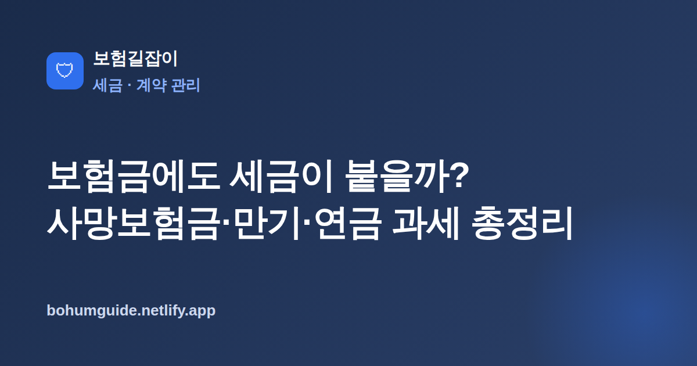

보험금에도 세금이 붙을까? 사망보험금·만기·연금 과세 총정리
보험금은 무조건 세금 없이 받는 돈이라고 생각하기 쉽습니다. 하지만 사망보험금은 누가 계약하고 누가 받느냐에 따라 상속세가 될 수도, 증여세가 될 수도, 비과세가 될 수도 있습니다. 어떤 원리로 갈리는지 세무 관점에서 정리했습니다.

✍️ 편집자 참고: 본 글은 초안이며 세무 자문이 아닙니다. 세법은 자주 개정되고 개인 상황마다 다르니, 게시 전 현행 세법 기준으로 검수하고 실제 사안은 세무 전문가 확인을 안내해 주세요.
보험금을 받을 때 많은 분이 "보험금은 세금이 없다"라고 알고 있습니다. 절반은 맞고 절반은 틀립니다. 보험금의 종류와 계약 구조에 따라 세금이 전혀 없기도 하고, 상속세나 증여세가 붙기도 합니다. 특히 사망보험금은 계약을 어떻게 짜 두었는지에 따라 세 부담이 완전히 달라지므로, 가입 단계에서 한 번쯤 확인해 둘 가치가 있습니다.
보험금에도 세금이 붙나? — 종류에 따라 다르다
보험금 과세를 한 문장으로 정리하면 "어떤 보험금이냐에 따라 다르다"입니다. 일반적으로 사망보험금은 계약 구조에 따라 상속세 또는 증여세가 문제 될 수 있고, 저축성보험의 만기환급금은 불어난 이자 부분이 이자소득으로 과세될 수 있으며, 연금 형태로 받는 보험금은 연금소득으로 보는 방식이 있습니다. 반대로 순수 보장성 보험의 상해·질병 치료비처럼 손해를 메워 주는 성격의 보험금은 대체로 과세 대상으로 보지 않는 편입니다. 결국 "보험금은 무조건 비과세"라는 단정은 위험하고, 성격을 구분해 따져 봐야 합니다.
사망보험금과 세금: 3자 조합이 결과를 가른다
사망보험금 과세의 핵심은 계약자(보험료를 낸 사람)·피보험자(보험 대상이 되는 사람)·수익자(보험금을 받는 사람)가 각각 누구인지입니다. 이 세 사람의 조합에 따라 같은 사망보험금이라도 상속세로 볼지, 증여세로 볼지, 과세 대상에서 비껴갈지가 달라집니다. 세 역할이 헷갈린다면 먼저 계약자·피보험자·수익자 차이 완벽 정리를 읽고 오면 이해가 훨씬 빠릅니다.
일반적인 원칙
큰 틀에서 일반적으로 이렇게 정리됩니다. 다만 이는 원칙일 뿐 개별 사안과 세법 개정에 따라 달라질 수 있으므로, 실제 판단은 반드시 전문가 확인이 필요합니다.
| 계약자(보험료 부담) | 피보험자 | 수익자 | 일반적 과세 성격 |
|---|---|---|---|
| 아버지 | 아버지 | 자녀 | 상속재산으로 보아 상속세 문제로 다뤄지는 경향 |
| 자녀 | 아버지 | 자녀 | 본인이 낸 보험료 대가로 받는 성격이라 증여·상속 대상이 아닌 것으로 보는 경향 |
| 어머니 | 아버지 | 자녀 | 보험료 낸 사람과 받는 사람이 달라 증여로 보는 경향 |
표는 방향을 잡기 위한 일반적 예시일 뿐이고, 실제로는 보험료를 실질적으로 누가 냈는지, 명의와 자금 출처가 일치하는지 등 여러 사정을 함께 봅니다. 특히 "계약자와 수익자가 같으냐"가 상속·증여 판단의 중요한 갈림길이 되는 경우가 많습니다. 숫자로 된 세율이나 공제 한도는 개정될 수 있어 여기서 단정하지 않으니, 개별 사안은 국세청·세무 전문가를 통해 확인하시기 바랍니다.
만기환급금·저축성보험: 이자 부분과 비과세 요건
저축성보험(만기에 낸 돈보다 더 돌려주는 유형)에서 불어난 부분은 성격상 이자소득에 가깝습니다. 따라서 원금을 넘어선 차익(보험차익)이 원칙적으로 과세 대상이 될 수 있습니다. 다만 세법은 일정 요건을 갖춘 저축성보험에 대해 비과세 혜택을 두고 있습니다. 흔히 언급되는 요건으로는 일정 기간 이상 유지, 납입 방식·한도 조건 등이 있는데, 구체적인 기간과 한도 숫자는 현행 세법상 기준을 따르며 개정될 수 있어 여기서는 단정하지 않습니다. 가입 시점에 "이 상품이 비과세 요건을 충족하는 구조인지"를 확인하는 것이 핵심입니다.
연금 수령 시 과세 개요
보험을 연금 형태로 나눠 받으면 그 성격에 따라 연금소득으로 과세되는 방식이 있습니다. 세제혜택을 받으며 적립한 연금인지, 비과세 요건을 갖춘 상품인지에 따라 수령 단계의 과세 방식이 달라집니다. 연금저축과 연금보험은 세제 구조가 서로 다르므로 혼동하기 쉬운데, 둘의 차이는 연금보험과 연금저축 차이에서 별도로 정리했습니다. 연금 역시 구체 세율은 상황별로 다르고 개정될 수 있으니 현행 세법 기준으로 확인해야 합니다.
반드시 알아두세요
본 글은 세무 자문이 아니라 일반적인 안내입니다. 보험금 과세는 세법 개정과 개인의 자금 출처·명의 등 구체적 사정에 따라 결과가 달라집니다. 특히 3자 조합에 따른 상속·증여 판단은 원칙만 참고하시고, 실제 세액과 신고 여부는 반드시 세무 전문가와 국세청을 통해 확인하시기 바랍니다.
실전: 세금까지 고려한 계약 구조
세금은 보험금을 받을 때가 아니라 계약을 짤 때 대부분 결정됩니다. 상속세가 걱정되는 상황이라면 누구를 계약자·수익자로 둘지 미리 점검하는 것이 좋습니다. 가정 상황에 맞춰 보장을 점검하고 싶다면 신혼·육아가정 보험 점검도 함께 참고할 수 있습니다.
- 내 보험의 계약자·피보험자·수익자가 각각 누구인지 증권으로 확인
- 보험료를 실질적으로 누가 부담했는지(자금 출처)와 명의가 일치하는지 점검
- 저축성보험이라면 비과세 요건 충족 구조인지 가입 시점 조건 확인
- 큰 금액이 오가는 사망보험금·증여성 계약은 세무 전문가와 사전 상담
- 세율·한도·요건은 매년 개정될 수 있으므로 그해 기준으로 재확인
요약
보험금은 종류에 따라 세금이 붙기도, 붙지 않기도 합니다. 사망보험금은 계약자·피보험자·수익자 조합에 따라 상속세·증여세·비과세로 갈리고, 저축성보험 차익과 연금 수령액은 일정 요건과 성격에 따라 과세될 수 있습니다. 원칙만 알아 두되, 구체 세액과 신고는 반드시 국세청·세무 전문가로 마무리하는 것이 안전합니다.
본 정보는 일반적인 안내이며 세무 자문이 아닙니다. 실제 과세 여부와 세액은 현행 세법과 개인 상황에 따라 다르므로 국세청·세무 전문가를 통해 반드시 확인하시기 바랍니다.